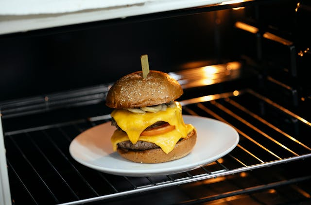

Home
Double Cheeseburger

A cheeseburger on a plate in an oven.
A double cheeseburger typically features two beef patties and two slices of cheese, often American, nestled between a bun. It's commonly topped with condiments like ketchup, mustard, pickles, and onions. Variations exist, with some restaurants offering different cheese types, buns, or additional toppings.
Double cheeseburgers are a versatile and popular choice for various occasions such as, satisfying a hearty appetite, celebrating National Cheeseburger Day, a casual lunch or dinner, and home cooking or backyard barbecues.
Ingredients
- 1 hamburger bun, split
- 1/3 pound ground beef
- 1 pinch salt
- 4 processed cheese singles (such as Kraft)
- 1 tablespoon thousand island salad dressing (such as Kraft)
- 1 slice tomato
- 1 leaf lettuce
- 1 slice onion
Steps
- Preheat a large skillet over medium heat. Place hamburger bun halves, cut-sides down,
in the hot skillet until lightly toasted, 2 to 3 minutes. Remove toasted buns to a plate.
- Separate beef into 2 portions and form each into a thin patty slightly larger than bottom bun. Season each patty with salt.
- Cook patties in the same large skillet over medium heat for 2 to 3 minutes. Flip patties over and place 2 cheese slices over each patty. Continue cooking until desired doneness is reached, 2 to 3 minutes more.
An instant-read thermometer inserted into the center of patties should read 160 degrees F (70 degrees C) for well done.
- Assemble cheeseburger in the following order: bottom bun, dressing, tomato, lettuce, beef patty with cheese, onion, beef patty with cheese, and top bun.